A feladatunk az volt, hogy egymástól különálló telephelyeknek építsük meg a közös hálózatukat!
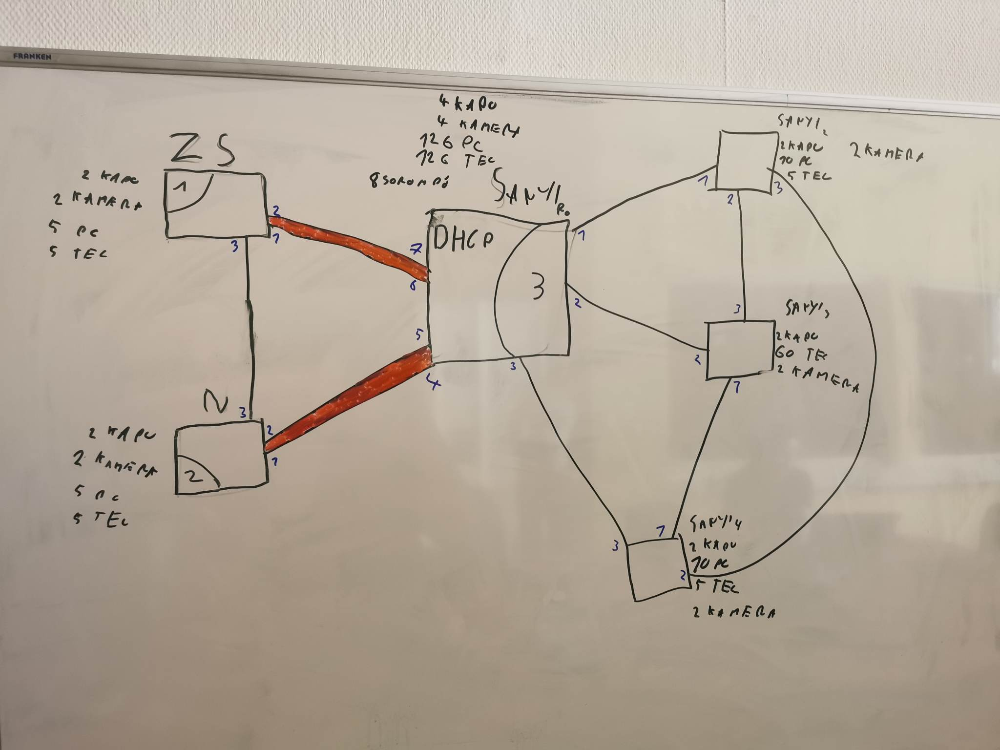
Információk: A Zs , N , Portchannel-el van Sanyi nevű telephelyhez kapcsolva Layer 2-n , míg a többi kis egység a Sanyi-val Layer3 fut. Mindenhol különböző mennyiségű , kamera ,sorompó, pc, telefon, kapu van ezeknek külön Vlan kellett és saját IP cím. A Sanyi telephely osztott Dhcp segítségével címet mindenhova. A telephelyeken a távoli elérésnek is működnie kellett.
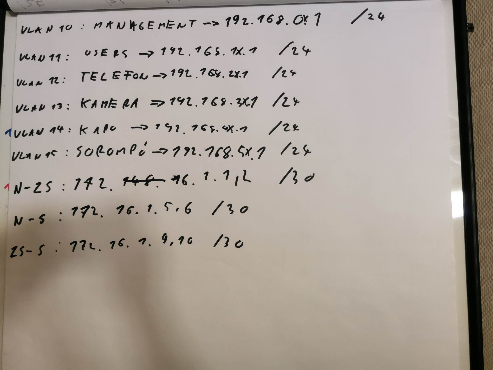
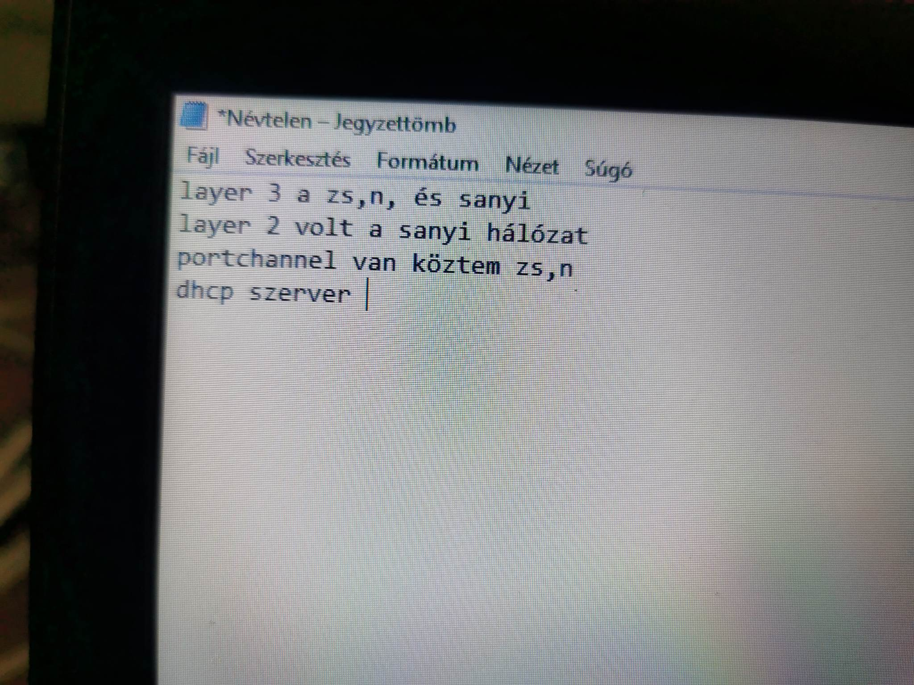
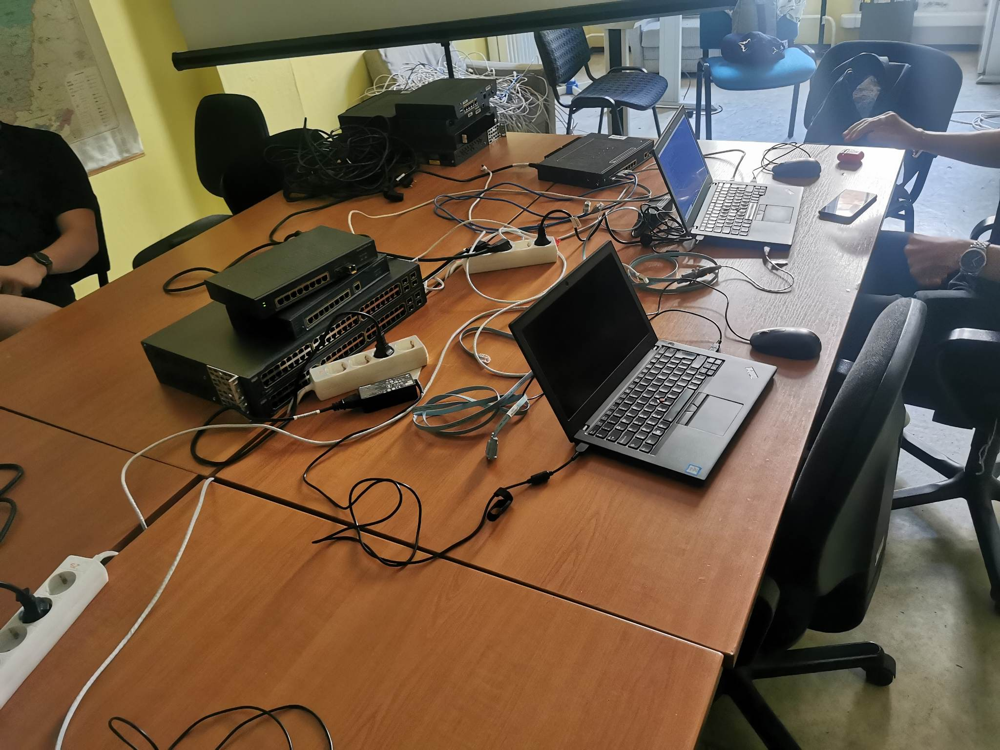
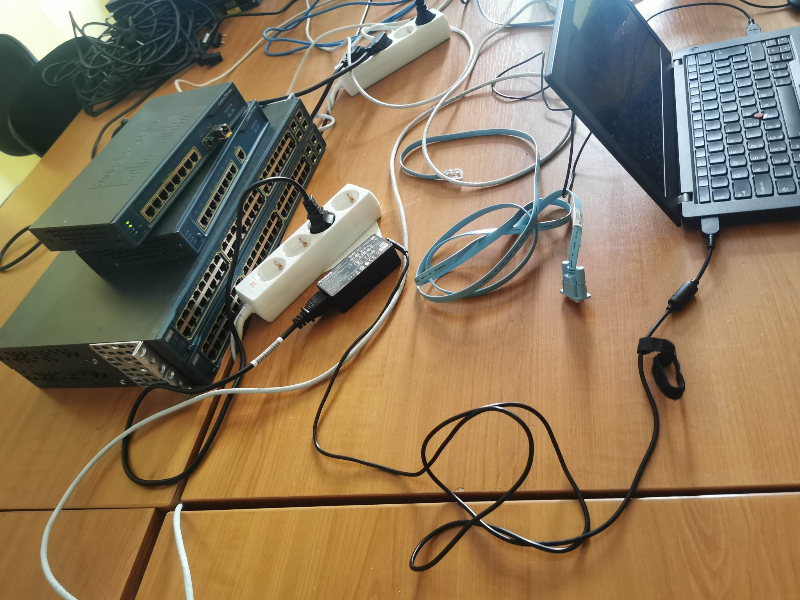
A port channel beállítás készen is lett!
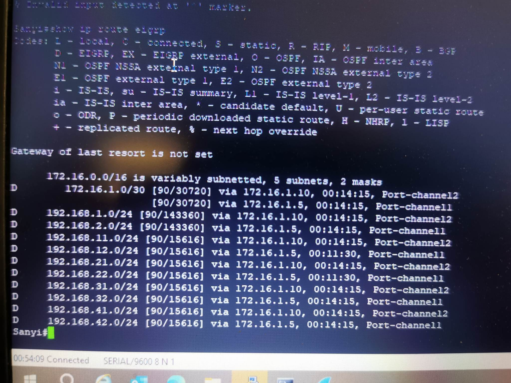
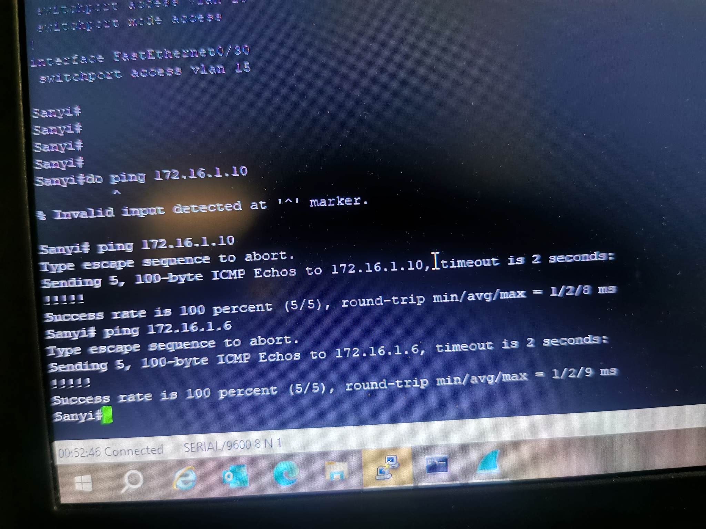
Jöhet a Dchp felépítése , címek kiosztása.
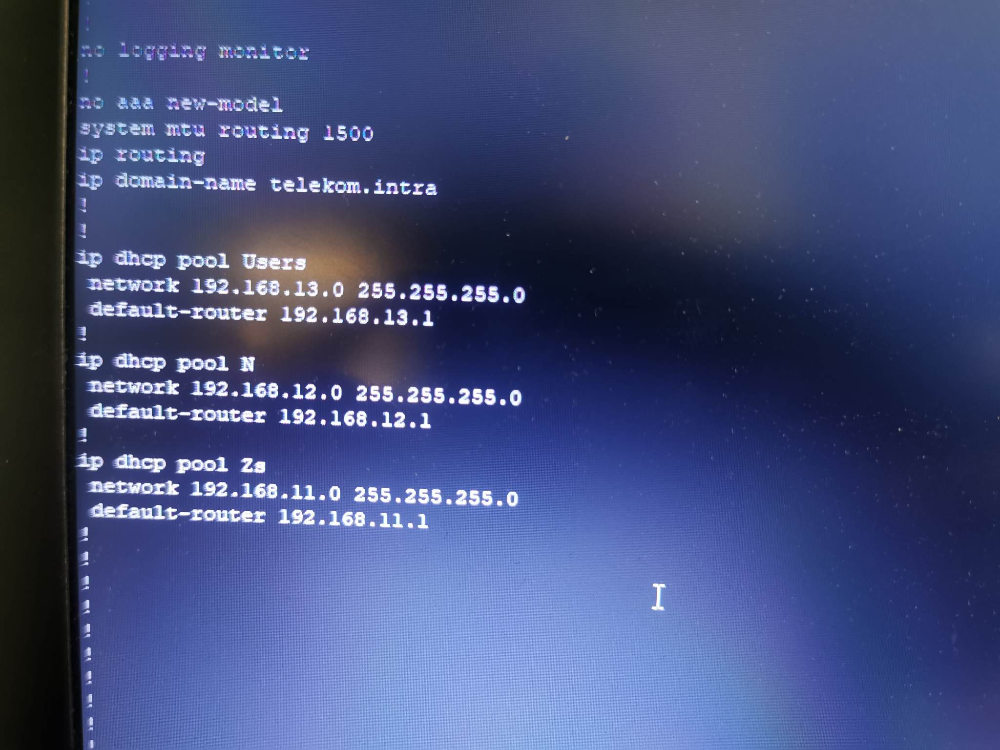
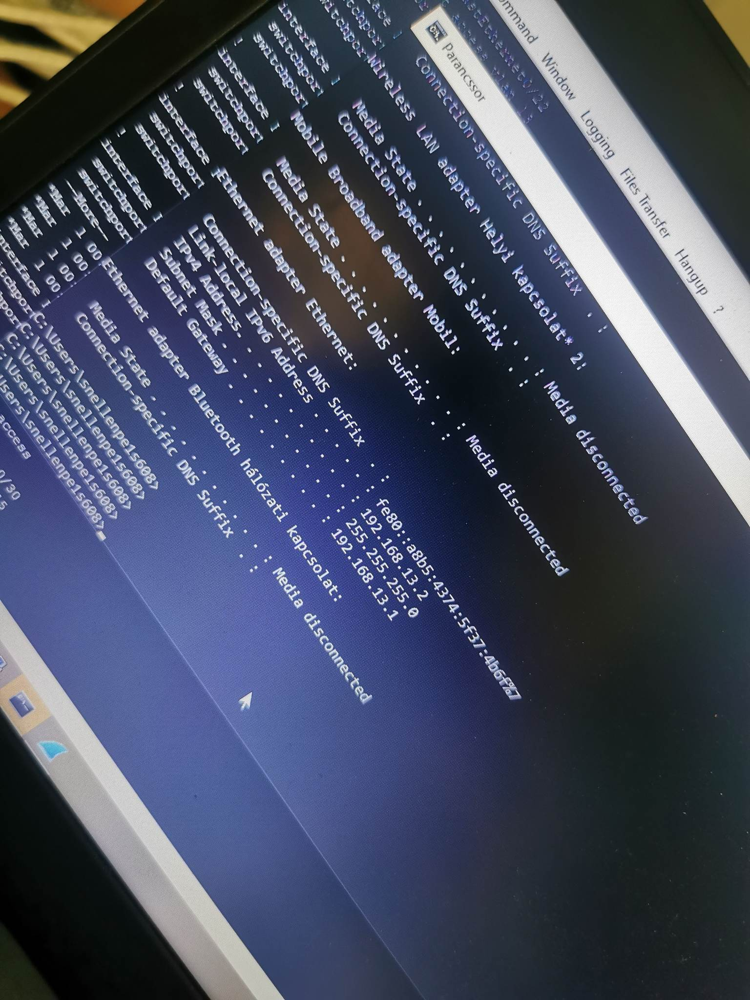
Egy 3-4 óra alatt a már minden remekül működött!
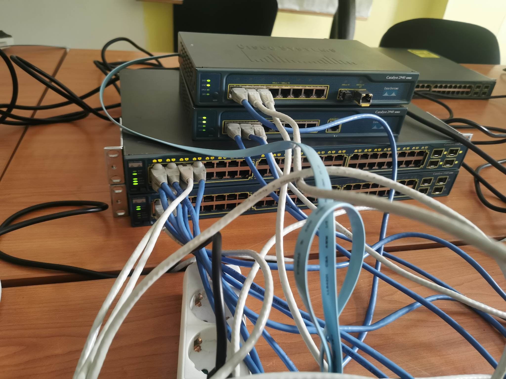
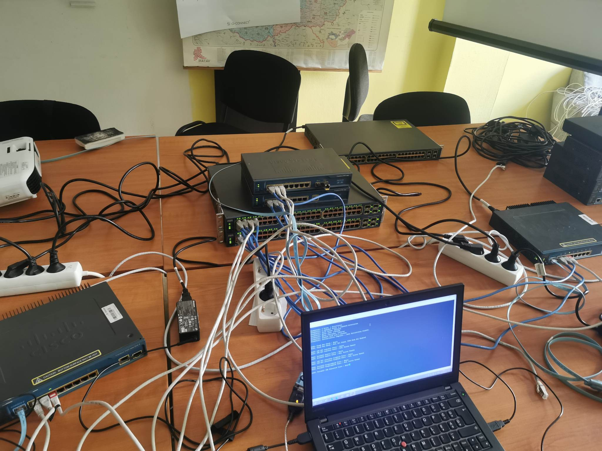